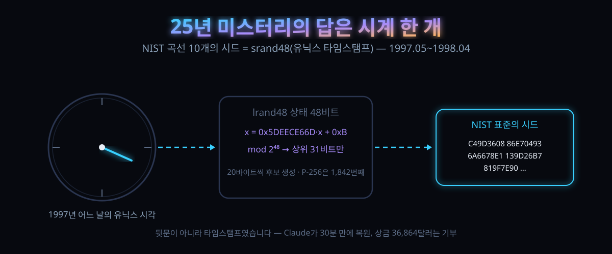

NSA가 감춘 게 아니었다 — NIST 곡선 10개의 시드, 1997년 유닉스 시계에서 나왔다

결론부터 말하면, 25년간 '뒷문' 논란의 중심에 있던 숫자들은 사실 아무 계획 없이 굴러 나온 것이었다. 만든 쪽이 쓴 건 1980년대 유닉스에 기본으로 딸려오던 난수 생성기 하나, 그 생성기에 씨로 넣은 건 컴퓨터 시계가 가리던 숫자 그 자체였다.
10월 16일 Anthropic이 내놓은 연구는, 그 사실을 국제 표준 문서에 실린 곡선 10개 전부에 대해 되짚어냈다. 오래된 코드 한 덩어리를 거꾸로 돌려본 결과, 시드가 태어난 시각은 1997년 5월부터 1998년 4월 사이에 몰려 있었다.
암호학계에서 이 소식이 낸 온도는 '충격'보다 '정리'에 가까웠다. 수십 년간 음모론의 장작을 태워온 의문이 사라졌고, 상금은 3배로 불어나 암호 재단에 넘겨졌다. 대신 '이렇게 뻔한 걸 25년간 왜 아무도 안 건드렸나'라는 새 질문이 자리에 남았다.
30초 요약
| 항목 | 내용 |
|---|---|
| 무슨 일 | 10월 16일, NIST 표준 타원곡선(P-192·P-224·P-256·P-384·P-521)과 ANSI X9.62 예시 곡선 5개의 '시드'가 어떻게 만들어졌는지 25년 만에 되짚어졌다. 한 연구팀(10명)이 발표했다 |
| 답은 | 해시 알고리즘이 아니라 C 표준라이브러리의 선형합동 난수 생성기 lrand48. 20바이트씩 잘라 후보를 나열하는 방식이었고, P-256는 1,842번째 후보였다 |
| 씨앗은 | 유닉스 타임스탬프로 초기화한 srand48. 열 개 곡선 전부의 초기화 값이 1997년 5월~1998년 4월의 시각으로 읽혔다 |
| 덤 | 1997년 5월에 만들어진 곡선 6개의 기준점(base point)까지 따로 특정됐다. Arjen Lenstra의 다정수 패키지 FreeLIP 난수 기능에서 나왔고, 씨앗 값은 20000, 20420 같은 작은 정수였다. NIST 곡선의 기준점이 설명된 건 이번이 처음이다 |
| 풀리지 않은 것 | 2진 곡선 중 B-163의 시드, 그리고 P-224 이후 4개 곡선과 2진 곡선들의 기준점 생성 방식 |
| 상금 | 2023년 건 12,288달러. 자선 기부 조건을 택해 3배인 36,864달러로 Let's Encrypt 운영 재단(ISRG)에 전달됐다. 수령 시각은 2026-10-15 01:07:51 UTC |
| 보안 영향 | 없다. 공격도, 약점도, 대책도 아니다. 발표문 표현대로 "할 일은 없고, 즐길 만한 마무리 이야기"다. 대신 'NSA가 곡선을 조작했을 가능성'은 한층 낮아졌다 |
| HN 온도 | 656표·댓글 264. "13년간의 음모론이 srand48(time(NULL)) 한 줄로 끝났다"는 안도와 "그래도 타임스탬프를 골랐을 가능성은 남았다"는 잔존 의혹이 같이 달렸다 |
1. 무엇이 터졌나
ECDSA는 인터넷에서 서명 하나로 신원을 증명하는 일의 대부분을 담당하는 알고리즘이다. 브라우저의 자물쇠, 패키지 서명, 결제 승인 뒤에서 돈다. 2000년 NIST가 FIPS 186-2라는 서명 표준에 곡선 세트를 실으면서, 곡선마다 '시드'라는 160비트 값도 함께실었다했다. 이 값은 곡선 방정식의 계수 하나(b)를 결정하는 재료다. P-256의 경우 이렇게 생겼다.
SEED = C49D3608 86E70493 6A6678E1 139D26B7 819F7E90
# 표준 문서에 실린 값 그대로표준 문서는 이 값이 '무엇으로 만들어졌는지'를 한 줄도 설명하지 않았다. 만든 쪽은 NSA였다. 암호학계는 이 침묵을 미스터리가 아니라 의심으로 취급했고, Koblitz와 Menezes는 논쟁사를 정리한 논문에 "수수께끼 속에 감긴 수수께끼"라는 식의 제목을 붙였다. 2015년에 가장 유력한 증언이 하나 나왔다. NSA에 오래 몸담았던 Jerry Solinas가 "우리 쪽에서는 재미있는 문구를 해시해서 만들었다고들 했다"고 회고한 것이다. 구체적으로는 "Bob하고 Jerry한테 봉급 올려주자", "Bob and Jerry rule" 같은 종류의 문장이라는 것이다. 실제로 코드를 짯던 Bob Reiter조차 세부는 기억하지 못했다.
2023년, 암호 개발자 Filippo Valsorda가 상금을 걸었다. 5개 곡선의 '전단계 값'을 처음 찾아낸 사람에게 12,288달러 — 단, 받은 돈 전액을 자선단체에 넘기면 3배로 늘려준다는 조건이었다. 이 미스터리는 2023년에도 이미 "25년 넘은 문제"로 불렸다. 2026년, Anthropic 사내 여러 사람이 이 흔적을 쫓았다. 모두 헛손질이었다. '재미있는 문장의 해시'라는 단서 자체가 틀렸다는 게 나중에 밝혀진다.
2. 왜 대단한 논점인가
① 열쇠를 쥔 건 질문 하나가 아니라 '단서를 버린 판단'이었다
10월, Anthropic의 한 연구원이 내부 연구 모델에 이렇게 물었다. 시드 생성 원리를 알아내라 — 단 '유머 문구 해시'라는 힌트는 주지 않았다. 30분도 안 되어 P-192·P-224·P-256·P-384·P-521 다섯 곡선의 시드가 전부 어떤 생성기에서 나왔는지 복원됐다. 답은 해시가 아니었다. C 라이브러리의 lrand48이었다. 48비트 상태를 갖고 매번 한 스텝씩 굴리는 선형합동 생성기인데, 스텝식은 이 한 줄뿐이다.
x = (0x5DEECE66D * x + 0xB) % 2**48 # lrand48의 내부 스텝
# 발표문에 붙은 재현 코드 그대로이 생성기를 돌면서 20바이트씩 잘라내면 후보가 연속으로 나온다. P-256의 시드는 1,842번째 후보였고, P-224는 7,026번째였다. 표준 문서는 그 20바이트를 '해시로 뽑은 값'처럼 보였지만 실제로는 고물 난수기의 연속 출력이었다.
② 결정적 단서는 암호가 아니라 '0이 너무 많이 보인' 것
모델은 공개된 시드 값을 1비트씩 밀어가며 '1990년대생 생성기의 연속 출력'과 겹치는지 보는 스캐너를 직접 짰다. 생성기와 출력 슬라이스 조합 34가지를 훑던 중 이상한 구석이 보였다. 시드 10개 중 4개가, 32비트 단어 20개 전부에서 맨 윗비트가 0이었다. 우연히 그렇게 갈 확률은 58을 열 번 곱한 값의 1분의 1이었다. 이 패턴은 lrand48가 48비트 상태 중 상위 31비트만 내보내는 버릇의 지문이었다. 안다면 눈으로도 보인다는 종류의 신호다.
가려진 17비트는 무식하게 다 맞아떨어졌다. 첫 단어에서 217개를 대보고 다음 4개 단어가 따라 나오는지 확인하면 됐고, 네 곡선 모두 통과했다. 소수 필드 곡선 5개는 출력에서 더 적게 남겨놔서 잘린 생성기의 상태를 되찾는 격자 문제로 빠졌다 — LLL 격자 약분이 등장하는 교과서 자리다. NIST 곡선 5개와 ANSI X9.62 곡선 5개, 열 개 전부 lrand48() >> 23 패턴이었다. 복원한 48비트 상태 하나가 시드 160비트 전체를 되풀이 만들어냈는데, 이건 우연으로 돌려도 설명이 안 되는 규모다.
③ 생성기를 거꾸로 돌려 '만든 날'이 나왔다
선형합동 생성기는 순방향으로 굴리는 것과 똑같은 값으로 거꾸로도 굴러간다. 모델은 상태를 역산해 srand48가 초기화될 때의 형태(하위 16비트가 0x330E)에 닿는 지점까지 되돌렸다. 이 형태는 65,536스텝에 한 번 나오는 것이라 그 자체로는 증거가 아니다. 그런데 열 개 곡선 모두에서 그 초기화 값이 1997년 5월부터 1998년 4월 사이의 유닉스 타임스탬프로 읽혔다. 2진 필드 곡선 4개는 1984년 2월로 읽혔는데, 타임스탬프를 2배로 잡으면 1998년 4월 17일(P-224가 만들어진 지 이 주 뒤)로 수렴한다. 프로그램을 돌린 기계의 시계를 반으로 줄여 썼을 가능성이 있다.
④ 발견을 발견으로 인정한 순간, 모델이 스스로 반증을 돌렸다
연구 팀이 공개한 사고 기록 일부는 이 사건의 정체성을 보여준다. "실제 계산으로 검증했다. 32비트 시드와 작은 인덱스에서 160비트 열 개가 일치하는 건 우연이 성립할 확률이 없다. 진짜다." 즉 '발견'을 선언하기 전에 자기가 테스트 환경에 있는 건 아닌지, 25년간 안 풀린 게 말이나 되는지부터 확률로 되물었다. LLM 결과를 받아쓰는 실무에서 진짜 본받을 동작은 이 부분이다.
3. 바로 써먹기
이 사건에서 실무로 옮길 수 있는 건 ECDSA가 아니라 'LLM으로 무엇을 시킬 수 있는가'의 기준선이다. 표로 가른다.
| 단계 | 모델이 한 일 | 그동안 왜 안 됐나 |
|---|---|---|
| 1. 가설 열기 | 2015년 회고('유머 문구 해시')를 힌트로 쓰지 않고, 생성기·출력 슬라이스 34가지 조합을 통째로 훑기 | 사람은 목격담에 매여 통째로 훑는 일을 안 한다(손이 많이 감) |
| 2. 신호 발견 | 시드를 1비트씩 슬라이드하며 상위 비트 전열 0을 관찰(우연 58^10분의 1) | 누가 볼 가치를 인정하기 전에 이미 지나간 구간 |
| 3. 상태 복원 | 숨은 17비트 전수 시도 + 잘린 LCG 복원은 LLL 격자 약분 | 도구는 전부 표준. 조합해서 돌릴 인내의 문제였을 뿐 |
| 4. 시각 특정 | 생성기를 역방향으로 굴러 초기화 값이 1997~1998년의 유닉스 시각임을 특정 | 생성기가 거꾸로 도는 물건인지 몰랐거나, 몰라도 됐거나 |
| 5. 자기 반증 | "내가 시뮬레이션 안에 있는 게 아니냐"까지 포함해 확률로 실세계 검증 후 선언 | 격식 때문에 아무도 소리 내지 않는 구간 |
우리말로 옮긴 재현 절차
발표문이 공개한 코어 함수는 10줄도 안 된다. 직접 확인해보려면 다음 순서면 된다 (Python, macOS·Linux 모두).
from datetime import datetime, timezone
def 시각(문자열): # "1997-08-16 01:52:34" → 유닉스 시각
return int(datetime.fromisoformat(문자열).replace(
tzinfo=timezone.utc).timestamp())
def 후보(씨, n, 당김, 밀기): # n번째 후보 = 스텝 (당김·n)개 중 마지막 당김개
x, 값 = (씨 << 16) | 0x330E, "" # srand48(씨)가 만드는 상태
for i in range(당김 * n):
x = (0x5DEECE66D * x + 0xB) % 2**48 # 한 스텝
if i >= 당김 * (n - 1): # 마지막 후보만 담기
값 += "%0*X" % ((40 - 밀기) // 4, x >> 밀기)
return 값
print(후보(시각("1997-08-16 01:52:34"), 1842, 20, 40))
# → C49D3608 86E70493 6A6678E1 139D26B7 819F7E90 — 바로 그 P-256 시드시드 전체 열 개에 대한 후보 인덱스와 초기화 시각, 곡선별 검증 코드가 발표문에 통째로 붙어 있다. 암호학 커뮤니티가 '믿어'서가 아니라 '같은 계산을 다시 돌려' 확인할 수 있게 된 게 이번 결과의 진짜 값어치다.
4. 해외 반응 쟁점
해커뉴스에는 발표 당일 656표와 댓글 264개가 달렸다. 논점은 세 갈래였다.
| 갈래 | 논지 (댓글창 분위기 요약) |
|---|---|
| 안도·통쾌 | "13년간의 호일 모자가 srand48(time(NULL)) 한 방에 정리됐다". "NIST 암호 음모론 세대에게는 재앙적 소식"이라는 조롱이 공감을 받았다 |
| 그래도 남는 의혹 | 상위 댓글 중 하나가 "타임스탬프를 골라 넣은 것(백도어용)은 아닌가"를 제기했다. 원문은 정면 대응한다: 실제 표준에 오르지 못하고 건너뛴 후보가 소수(P-256 실행에서 3개, ANSI 예시 곡선 두 실행에서 7개)라는 것. 약화 곡선을 고르려면 약한 곡선이 흔해야 하는데, 건너뜀 규모가 그걸 허락하지 않는다는 논리다 |
| 왜 그때 말 안 했나 | "독립 검증 커뮤니티에 신뢰와 선의를 그토록 태운 게 이해가 안 된다. 있는 그대로 설명하면 됐을 텐데" — 다만 "그 커뮤니티가 어떤 답을 진실로 인정했을 것 같냐"는 반론도 붙었다. Dual_EC_DRBG 이후엔 NSA를 의심할 명분이 이미 사라졌었다는 댓글도 있었다 |
전문가 쪽 반응은 원문이 대신 정리해뒀다. "수년 전부터 이 곡선들을 신뢰하긴 했다. 이번 건은 몇 년간의 추측에 대한 재미있는 마무리이며, 무언가 조치할 일은 없다." 즉 패치도, 마이그레이션도 없는 뉴스다.
5. 마시기 전 주의
첫째, 이건 보안 사고 기사가 아니다. 시드의 정체는 ECDSA 서명 스킴의 강도와 무관하다. 타임스탬프가 드러났다고 내 인증서가 약해지지 않는다. 이걸 '뒷문 발견'으로 읽으면 오독이다 — 정반대로, 뒷문일 가능성이 줄었다는 뉴스다.
둘째, 전부가 풀린 게 아니다. 2진 곡선 중 B-163의 시드는 어떤 접근에도 걸리지 않아 미해로 남았고, P-224 이후 곡선 4개와 2진 곡선들의 기준점이 어떻게 뽑혔는지도 설명되지 못했다. 발표문은 이 빈칸을 명시적으로 열어뒀다.
셋째, '1998년 4월 17일'은 해석이지 확인이 아니다. 2진 곡선 4개가 같은 날로 수렴하는 현상을 '시계를 반으로 줄여 쓴 프로그램'으로 해석한 것뿐, 그 프로그램을 파낸 게 아니다. 소수 필드 곡선 열 개에서 1997년 5월~1998년 4월로 곧바로 읽힌 판정과는 신뢰도가 다르다.
넷째, '모델이 30분 만에 풀었다'에 현혹되지 말 것. 문제는 이미 30년 동안 정의·상금까지 걸린 상태로 굴절 없이 남아 있었고, 주체는 Anthropic 내부 연구 모델이었으며, 검증은 결국 사람이 다시 돌린다. 'LLM이면 아무나 푼다'는 식의 일반화는 성립하지 않는다.
다섯째, 이 발표는 Anthropic이 자기 모델의 역량을 보여주는 마케팅 자료가 동시에 맞다. 연구자 10명 중에는 Nicholas Carlini처럼 이름이 알려진 이도 있다. 다만 재현 코드가 전부 공개됐으니, 판정은 남의 말이 아니라 자기 계산으로 하면 되는 사안이다.